GitHub 小白入门教程
找工具 · 提效率 · 挖掘赚钱机会
原创整理 · 2026 年 11 月版 · 建议收藏本页，随时回来看
GitHub 是全世界程序员放代码的地方，但它其实也是一个超大的免费软件仓库和创意灵感库。不会写代码也完全能用：找免费好用的软件、找学习资料、看别人在做什么产品。这份教程从零讲起，看完你就能自己逛 GitHub。
1. GitHub 是什么，能帮我干嘛
把它想成「代码界的云仓库 + 论坛 + 应用商店」。每个项目叫一个仓库（Repository，简称 repo），里面有源代码、说明书（README）、讨论区（Issues）和下载区（Releases）。
| 你想做的事 | GitHub 能给你的 |
|---|---|
| 找免费软件 | 大量开源软件，免费、无广告，例如截图、录屏、文件互传、PDF 工具 |
| 学东西 | 中文学习路线、面试题、教程合集（很多 Star 上万） |
| 提高效率 | 各种小工具、浏览器插件、自动化脚本 |
| 找商业灵感 | 看大家在做什么、缺什么，发现需求 |
2. 注册账号（含国内打开慢怎么办）
只是看和下载，其实不用注册。但注册后可以收藏（Star）项目、关注作者、提问题，建议注册一个。
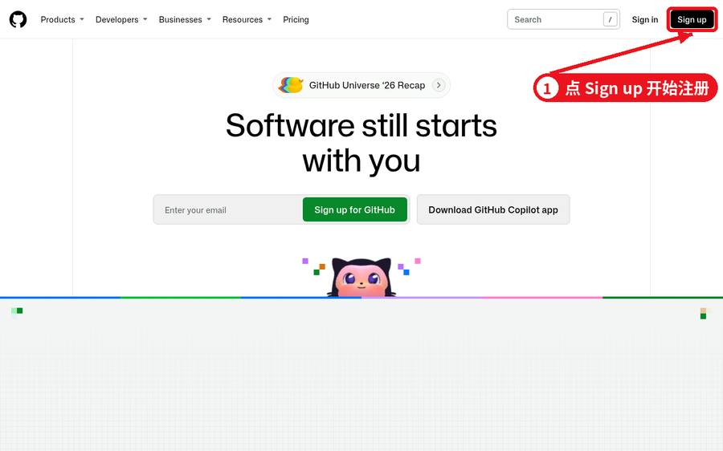
详细步骤
- 浏览器打开
https://github.com，点右上角 Sign up。 - 输入邮箱（QQ 邮箱、163 邮箱都可以），设置密码（至少 15 位，或 8 位且含数字和小写字母）。
- 用户名只能用英文、数字和短横线，以后会出现在你的主页网址里，起个好记的。
- 完成一个小的人机验证（拼图或选图），然后去邮箱里找 GitHub 发来的 8 位验证码填进去。
- 它会问你几个使用偏好的问题，可以直接跳过。
- 强烈建议：进 Settings → Password and authentication，开启两步验证（Authenticator 应用，如手机上的验证器 App），避免账号被盗。
国内打开慢、图片加载不出来怎么办
- 换个时间段：GitHub 在国内属于「能打开但时快时慢」，早上和深夜一般更快。
- 换网络：Wi‑Fi 慢就切手机流量试试，不同运营商差别很大。
- 用加速工具：开源工具 dev-sidecar、Watt Toolkit 都带 GitHub 访问加速功能（第 7 节清单里有）。
- 下载大文件慢：在 Release 页面复制下载链接，用下载工具（如 Motrix）下载，支持断点续传。
- 浏览器翻译：页面全是英文时，用 Edge / Chrome 右键「翻译成中文」，基本能看懂。
3. 看懂一个项目页面
先看真页面（以文件互传工具 LocalSend 为例），再看下面的简化示意图。
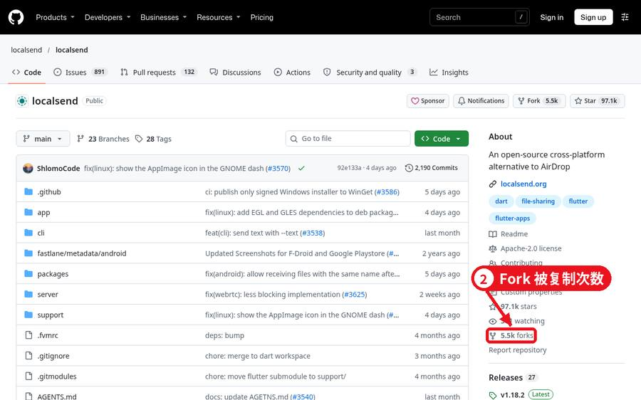
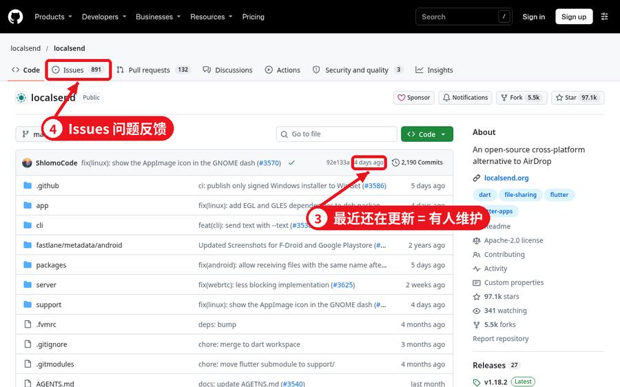
| 编号 | 位置 | 意思 |
|---|---|---|
| ① | 文件列表 | 源代码，不会编程可以跳过 |
| ② | Star | 收藏/点赞，数量代表受欢迎程度 |
| ③ | Fork | 复制一份到自己账号，用于二次开发 |
| ④ | Issues | 问题反馈区，用户报 bug、提建议 |
| ⑤ | Watch | 订阅更新通知 |
| ⑥ | 最近提交时间 | 项目还活不活跃 |
| ⑦ | Releases | 打包好的安装包，普通人下载软件就点这里 |
| ⑧ | README | 说明书，最重要 |
4. 搜项目的 6 个技巧
- 用英文关键词：搜「screenshot」比搜「截图」结果多十倍。不知道英文就先用翻译查一下。中文关键词也能搜，适合找中文教程（如「面试」「学习路线」）。
- 按 Star 排序：搜索结果页右上角 Sort 选 Most stars，好项目自然靠前。
- 用搜索语法筛选（直接输到搜索框）：
写法 作用 pdf tool stars:>1000Star 超过 1000 的 PDF 工具 ocr language:Python用 Python 写的文字识别项目 note app pushed:>2026-06-01半年内还在更新的笔记软件 awesome excelExcel 相关资源合集（awesome = 精选清单） 中文 学习路线 in:readme说明书里含这些字的项目 topic:screenshot打了「截图」标签的项目 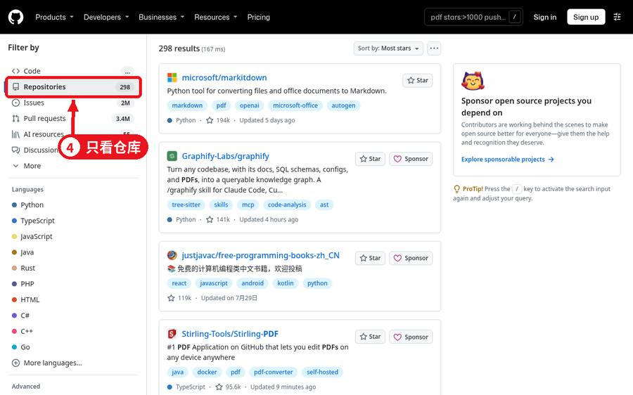
加上 stars:>1000 pushed:>2026-06-01 条件后，结果更靠谱 - 找「awesome 清单」：几乎每个领域都有人整理「awesome-xxx」精选清单，一个清单顶你搜一天。
- 逛 Trending 热榜：
github.com/trending看今天/本周涨 Star 最快的项目，可选语言和时间范围。 - 看中文推荐周刊：HelloGitHub（每月推荐入门友好的开源项目）、科技爱好者周刊，每期都有好项目。
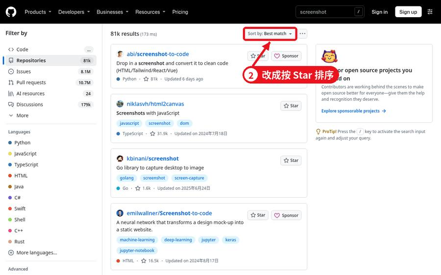
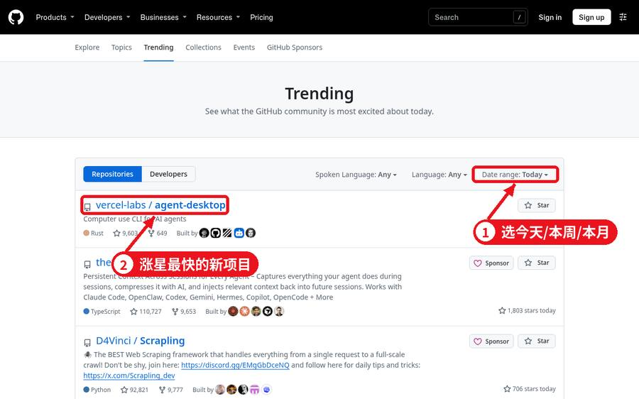
5. 判断项目靠不靠谱
- Star（星标）：越多越受欢迎。几十个 Star 不代表不好，但新手优先选上千的。
- Fork：被复制的次数，多说明很多人在它基础上改，生命力强。
- 最近更新时间：文件列表上方显示最后一次提交时间。半年内有更新一般说明作者还在维护。
- Issues：点进去看 Open（未解决）和 Closed（已解决）比例，看作者回复是否及时。也是找使用问题答案的最好地方——先搜一下，你遇到的问题很可能别人问过。
- 开源协议（License）：右侧 About 里能看到，比如 MIT、Apache‑2.0、GPL。想商用一定要先看协议，第 8 节会讲。
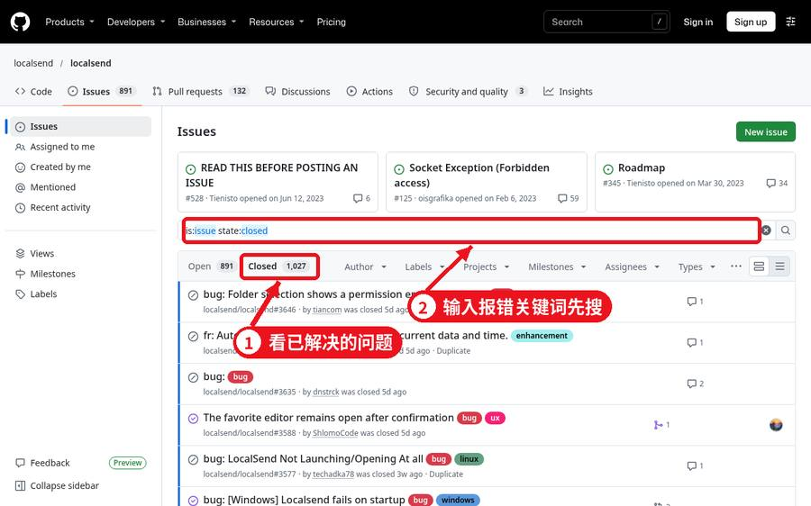
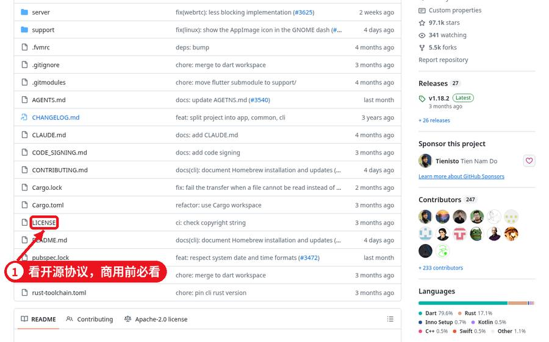
6. 下载软件：Release 页面怎么看
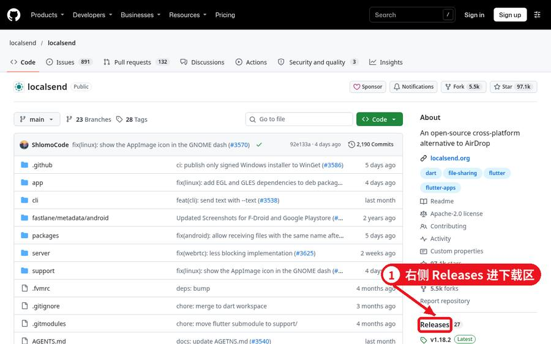
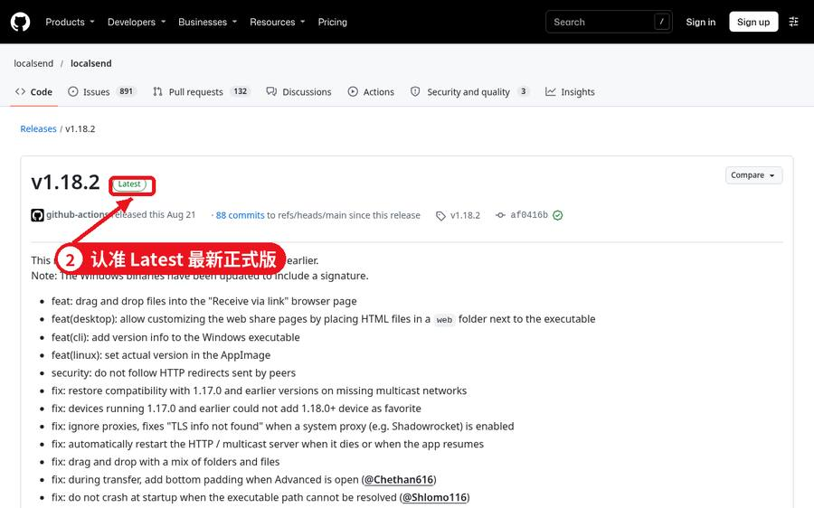
在项目首页右侧点 Releases（或网址后面加 /releases），找带绿色 Latest 标记的最新版本，展开底部 Assets：
| 文件名里有… | 适合 |
|---|---|
.exe / .msi / win / windows / x64 | Windows 电脑（一般选 x64） |
.dmg / mac / darwin；arm64=苹果 M 系列芯片，x64/intel=老款 Mac | 苹果电脑 |
.apk / android | 安卓手机 |
portable / .zip | 免安装版，解压即用 |
Source code | 源代码，普通用户不要下这个 |
Pre-release 标记 | 测试版，可能不稳定，新手选正式版 |
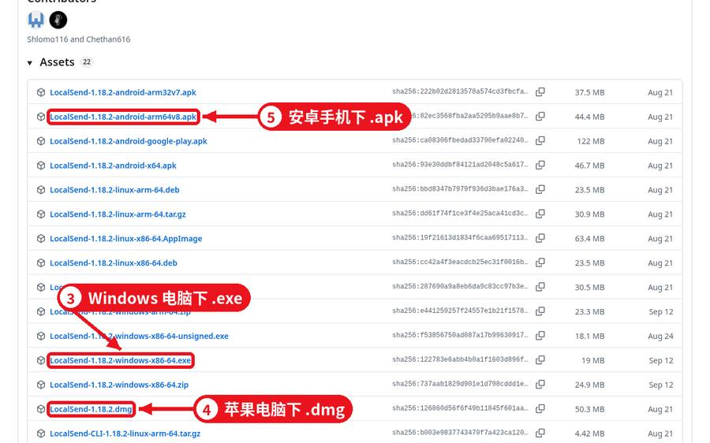
如果项目没有 Releases，只想看看源代码或资料，就点绿色 Code 按钮，选 Download ZIP，下载整个项目压缩包。
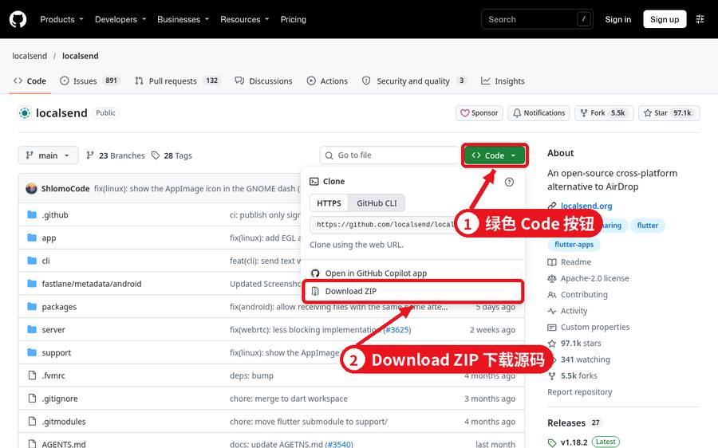
7. 常用提效工具清单（20 个真实项目）
Star 数为 2026 年 11 月初查询，均为长期维护的开源项目；点击链接直达官方仓库。
| 项目 | 用途 | 平台 |
|---|---|---|
| PowerToys | 微软官方 Windows 增强工具箱：批量改名、取色、窗口布局、文字识别等 | Win |
| LocalSend | 同一 Wi‑Fi 下手机电脑互传文件，不走流量不限速 | 全平台 |
| RustDesk | 远程桌面，帮家人远程弄电脑 | 全平台 |
| Ventoy | 做系统启动 U 盘，把镜像拷进去就能用 | Win/Linux |
| Umi-OCR | 离线截图识字、批量图片转文字，中文效果好 | Win |
| Motrix | 全能下载工具，断点续传 | 全平台 |
| QuickLook | 选中文件按空格直接预览（像 Mac 一样） | Win |
| ShareX | 截图、长截图、录屏、录 GIF | Win |
| Stirling-PDF | PDF 合并、拆分、压缩、转换（自己部署） | 网页/服务器 |
| draw.io 桌面版 | 画流程图、架构图、思维导图 | 全平台 |
| Excalidraw | 手绘风白板，讲方案很直观 | 网页 |
| Upscayl | 图片放大变清晰 | 全平台 |
| Logseq | 本地笔记、双向链接知识库 | 全平台 |
| dev-sidecar | GitHub 等开发者网站访问加速 | 全平台 |
| Watt Toolkit | GitHub/Steam 访问加速等 | 全平台 |
| HelloGitHub | 中文开源项目推荐月刊 | 阅读 |
| 科技爱好者周刊 | 阮一峰的科技周刊，每周有工具推荐 | 阅读 |
| awesome | 所有「awesome 清单」的总目录 | 阅读 |
| awesome-mac | Mac 好用软件大全（有中文版） | 阅读 |
Trending 热榜github.com/trending | 每天看看最火的新项目 | 阅读 |
8. 怎么从 GitHub 找赚钱机会（合规思路）
思路 1：从 Issues 里找真实需求
热门项目的 Issues 里，大量用户在说「希望能…」「怎么做到…」。高频出现的问题，就是普通人卡住的地方，可以做成教程、视频讲解或代安装/配置服务。
思路 2：给开源工具做「中文化服务」
很多好工具只有英文文档。整理成中文图文教程、使用技巧合集，在内容平台分享积累关注，是门槛最低的方式。注意要自己写，引用时注明出处。
思路 3：部署与技术支持
像 Stirling-PDF、RustDesk 这类可以自己部署的项目，小公司常常需要但不会装。会照着文档装好、写一份使用说明，就能提供有价值的服务。
思路 4：从 Trending 看趋势
连续几周涨星很快的项目代表新需求。早一点学会、早一点写教程，就更容易被人搜到。
思路 5：会写代码的进阶路线
- 给项目修 bug、提交改进（Pull Request），积累作品集，对找工作很有帮助；
- 做自己的开源小工具，开通 GitHub Sponsors 接受赞助；
- 一些项目会为解决特定 Issue 设置悬赏（bounty），按项目规则参与。
一定要遵守的规矩
- 看 License：MIT / Apache‑2.0 一般允许商用，但要保留原作者版权声明；GPL 类协议修改后再分发需同样开源；没有协议的项目默认不能随便用。
- 不要把别人的免费软件改名当成自己的产品卖，不要倒卖别人明确禁止商用的资源。
- 不要用来做爬取隐私、绕过付费、破解等违法违规用途。
9. 进阶：自己建个仓库，记录用过的工具
逛熟以后，建议建一个自己的仓库（比如叫 tool-notes），记下每个工具解决了什么问题、用的哪个版本、踩过什么坑。以后找起来快，也是很好的作品记录。
- 登录后点右上角 + → New repository。
- Repository name 填
tool-notes，勾选 Add a README file，点 Create repository。 - 点 README 右上角的铅笔图标编辑，写下第一条记录，点 Commit changes 保存。
- 要上传文件：点 Add file → Upload files，把文件拖进去再保存。
看懂 Pull Request（合并请求）
别人想改一个项目，会先在自己的副本（Fork）里改好，再发一个 Pull Request 请作者合并。点进任意一个 PR，能看到改了哪几行、大家怎么讨论的。
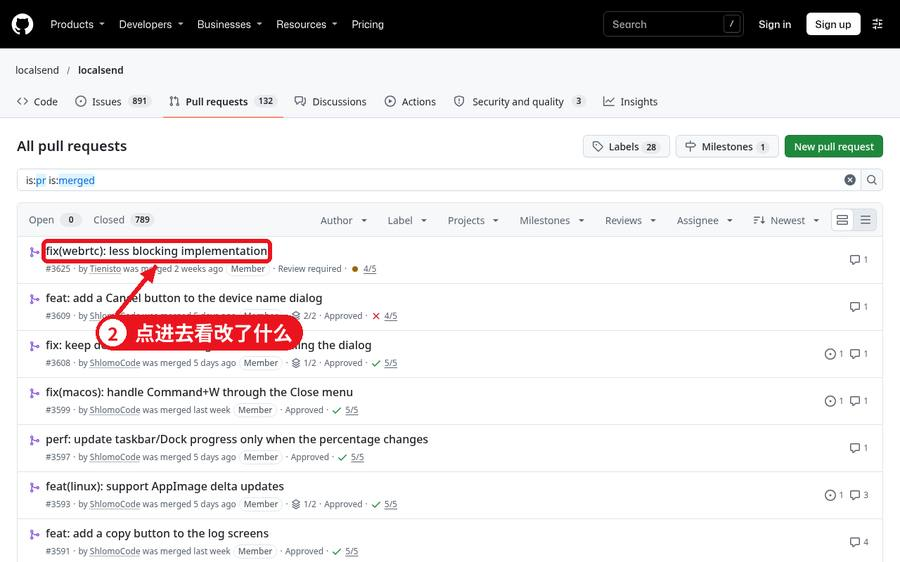
在电脑上用 Git 同步（会一点命令行再看）
第 1 步：安装 Git（官网 git-scm.com），打开终端输入 git --version，能看到版本号就是装好了。再用 git config --global user.name 和 user.email 设好署名。
第 2 步：生成 SSH 钥匙：ssh-keygen -t ed25519 -C "你的邮箱"，提示什么都直接回车。
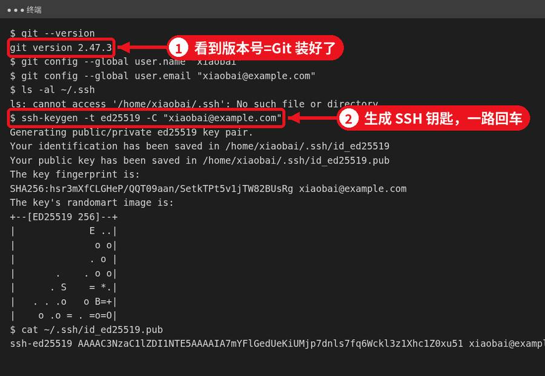
第 3 步：用 cat ~/.ssh/id_ed25519.pub 显示公钥，复制整行，到 GitHub 的 Settings → SSH and GPG keys → New SSH key 粘贴保存。然后执行 ssh -T git@github.com，看到 “Hi 你的用户名” 就是连上了。
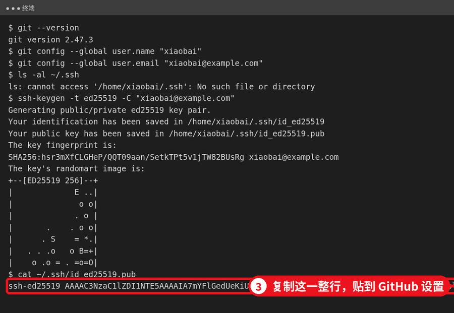
第 4 步：把仓库下载到电脑（git clone 地址），改完后 git add → git commit -m "说明" 保存，再 git push 传上去。
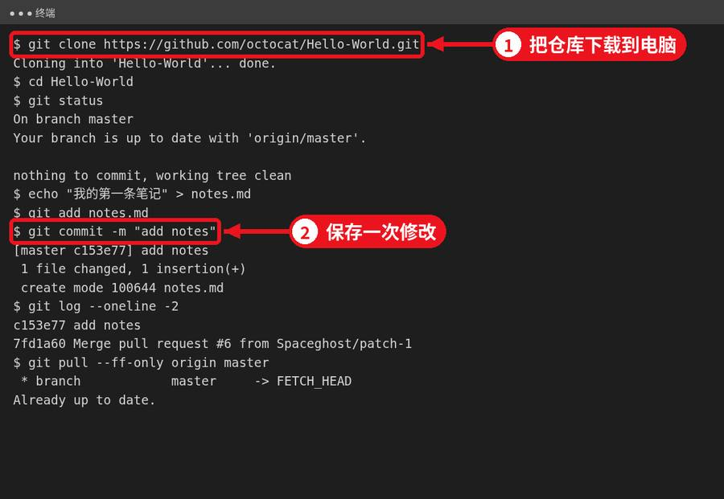
第 5 步：在网页上改过东西，电脑上执行 git pull 同步回来。
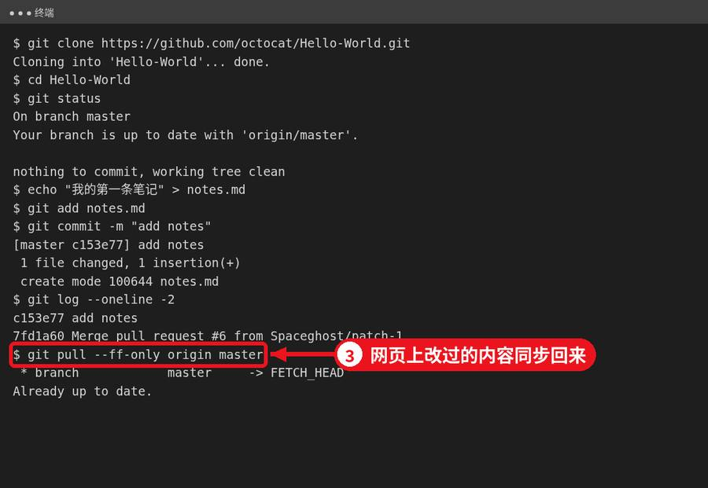
10. 卡住了怎么办
- 先执行
git status看现在是什么状态，大部分提示已经告诉你下一步该干嘛。 - 去项目 Issues 里搜报错的关键词。
- 自己发 Issue 时写清四件事：怎么操作的、想要什么结果、实际出了什么、完整报错文字，再附一张截图。别只写「用不了」。
11. 常见问题
Q：不会英文能用吗？
能。浏览器右键翻译整页，README 一般有截图，配合本教程的「页面地图」就够用。
Q：GitHub 收费吗？
个人看、下载、建仓库都免费。
Q：手机能用吗？
能，浏览器直接打开 github.com 即可，也有官方 GitHub App。下载电脑软件建议用电脑。
Q：下载的软件安全吗？
官方仓库、Star 多、更新活跃的项目通常可信；仍建议装杀毒软件，别从来路不明的仓库下载。
本教程为原创整理，仅供个人学习使用。文中软件均为各自作者的开源项目，名称与商标归原作者所有。